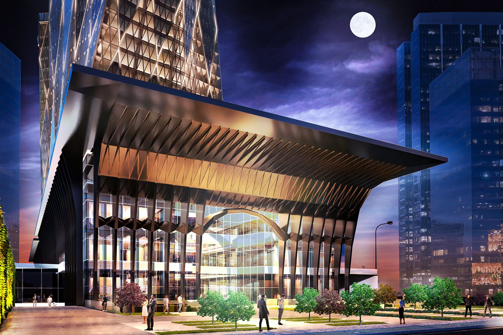
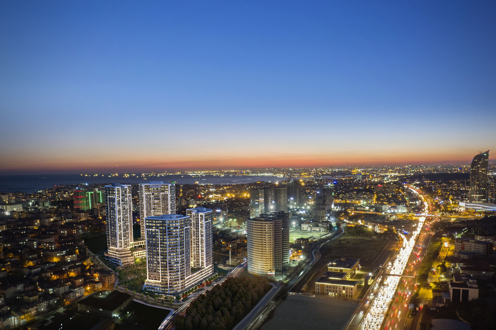

Yatırımcı İlişkileri
VKGYO
VKGYO Borsa İstanbul
3,27 ₺
- Günlük değişim
- ▲ %1,24
- İşlem hacmi
- 186,4 milyon ₺
- Piyasa değeri
- 14,39 milyar ₺
- 52 hafta en düşük
- 2,34 ₺
- 52 hafta en yüksek
- 3,27 ₺
- Pazar
- Yıldız Pazar
Tablo olarak göster
| Ay | Kapanış |
|---|---|
| Ekim 2025 | 2,47 ₺ |
| Kasım 2025 | 2,58 ₺ |
| Aralık 2025 | 2,68 ₺ |
| Ocak 2026 | 2,65 ₺ |
| Şubat 2026 | 2,81 ₺ |
| Mart 2026 | 2,83 ₺ |
| Nisan 2026 | 2,53 ₺ |
| Mayıs 2026 | 2,50 ₺ |
| Haziran 2026 | 2,43 ₺ |
| Temmuz 2026 | 2,56 ₺ |
| Ağustos 2026 | 2,99 ₺ |
| Eylül 2026 | 3,27 ₺ |
Özel Durum Açıklamaları
- Şirket Genel Bilgi FormuKAP
- Şirket Genel Bilgi FormuKAP
- Şirketimiz Adres Değişikliği ve Tescili HakkındaKAP
- Kurumsal Yönetim İlkelerine Uyum DerecelendirmesiKAP
- Şirketimiz Maddi Duran Varlık AlımıKAP
- Yönetim Kurulu Komiteleri GüncellemeKAP
- Yönetim Kurulu Komitelerinin Görev Alanları ve Çalışma EsaslarıKAP
- Bağımsız Yönetim Kurulu Üyesi AtamaKAP
- Şirket Genel Bilgi FormuKAP
Genel Kurul
2025 Yılı Olağan Genel Kurulumuzu, 17 Nisan 2026 tarihinde gerçekleştirdik.
Devamını OkuRaporlar ve Yatırımcı Sunumları
-

2025 Yılı Faaliyet Raporu
Devamını Oku -

2025 TSRS Uyumlu Sürdürülebilirlik Raporu
Türkiye Sürdürülebilirlik Raporlama Standartları (TSRS) ile uyumlu olarak hazırladığımız 2025 TSRS Uyumlu Sürdürülebilirlik Raporumuzda; sürdürülebilirlik yaklaşımımızı, çevresel, sosyal ve yönetişim alanındaki çalışmalarımızı ve performansımızı paydaşlarımızla şeffaf bir şekilde paylaşıyoruz.
Devamını Oku

Kurumsal Yönetim
Kurumsal Yönetim Derecelendirme Notumuzu 9,42’den 9,48’e çıkardık.